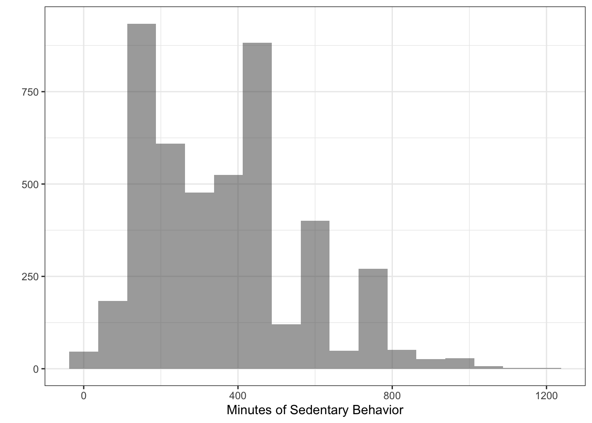

Chapter 5: Generalized Linear Models
“You must stick to your conviction, but be ready to abandon your assumptions.” — Dennis Waitley
Generalized Linear Models (GLM’s) are extensions of linear regression to areas where assumptions of normality and homoskedasticity do not hold. There are several versions of GLM’s, each for different types and distributions of outcomes. We are going to go through several of the most common.
This chapter is to introduce the method very briefly and demonstrate how to perform one in R. We do not delve into the details of each method much, but rather focus on showing the quirks of the coding.
We discuss:
- Logistic Regression
- Poisson Regression
- GLM with Gamma distribution
- Negative binomial
- Beta Regression
Logistic Regression
For binary outcomes (e.g., yes or no, correct or incorrect, sick or healthy), logistic regression is a fantastic tool that provides useful and interpretable information. Much like simple and multiple linear regression, logistic regression1 uses dummy coding and provides coefficients that tell us the relationship between the outcome and the independent variables.
Since the outcome is binary, we use a statistical transformation to make things work well. This makes it so the outcome is in “log-odds.” A simple exponentiation of the coefficients and we get very useful “odds ratios.” These are very common in many fields using binary data.
Luckily, running a logistic regression is simple in R. We first create the binary outcome variable called dep. We use a new function called mutate to create a new variable (we could do this a number of ways but this is probably the cleanest way).
## First creating binary depression variable
df <- df %>%
mutate(dep = dpq010 + dpq020 + dpq030 + dpq040 + dpq050 +
dpq060 + dpq070 + dpq080 + dpq090) %>%
mutate(dep2 = ifelse(dep >= 10, 1,
ifelse(dep < 10, 0, NA)))Note that we added the values from the ten variables that give us an overall depression score (dep). We then use ifelse() to create a binary version of depression called dep2 with a cutoff of \(\geq 16\) meaning depressed. Because there are missing values denoted as “NA” in this variable, we use a “nested ifelse” to say:
- IF depression \(\geq 10\) then dep2 is 1,
- IF dpression \(< 10\), then dep2 is 0,
- ELSE dep2 is NA.
Note that these nested ifelse() statements can be as long as you want. We further need to clean up the asthma and sedentary variables.
## Fix some placeholders
df <- df %>%
mutate(asthma = washer(mcq010, 9),
asthma = washer(asthma, 2, value = 0)) %>%
mutate(sed = washer(pad680, 9999, 7777))Now let’s run the logistic regression:
l_fit <- glm(dep2 ~ asthma + sed + race + famsize,
data = df,
family = "binomial")
summary(l_fit)##
## Call:
## glm(formula = dep2 ~ asthma + sed + race + famsize, family = "binomial",
## data = df)
##
## Deviance Residuals:
## Min 1Q Median 3Q Max
## -0.7831 -0.4479 -0.4078 -0.3645 2.5471
##
## Coefficients:
## Estimate Std. Error z value Pr(>|z|)
## (Intercept) -2.6203555 0.2380770 -11.006 < 2e-16 ***
## asthma 0.5688452 0.1276326 4.457 8.32e-06 ***
## sed 0.0005638 0.0002610 2.160 0.0307 *
## raceOtherHispanic 0.7162568 0.2328673 3.076 0.0021 **
## raceWhite 0.1287059 0.2116414 0.608 0.5431
## raceBlack 0.0189205 0.2205461 0.086 0.9316
## raceOther -0.4901414 0.2570123 -1.907 0.0565 .
## famsize -0.0318309 0.0373218 -0.853 0.3937
## ---
## Signif. codes: 0 '***' 0.001 '**' 0.01 '*' 0.05 '.' 0.1 ' ' 1
##
## (Dispersion parameter for binomial family taken to be 1)
##
## Null deviance: 2706.3 on 4436 degrees of freedom
## Residual deviance: 2648.2 on 4429 degrees of freedom
## (195 observations deleted due to missingness)
## AIC: 2664.2
##
## Number of Fisher Scoring iterations: 5We used glm() (stands for generalized linear model). The key to making it logistic, since you can use glm() for a linear model using maximum likelihood instead of lm() with least squares, is family = "binomial". This tells R to do a logistic regression.
Poisson Regression
As we did in logistic regression, we will use the glm() function. The difference here is we will be using an outcome that is a count variable. For example, the sedentary variable (sed) that we have in df is a count of the minutes of sedentary activity.
p_fit <- glm(sed ~ asthma + race + famsize,
data = df,
family = "poisson")
summary(p_fit)##
## Call:
## glm(formula = sed ~ asthma + race + famsize, family = "poisson",
## data = df)
##
## Deviance Residuals:
## Min 1Q Median 3Q Max
## -27.362 -8.430 -1.477 5.823 34.507
##
## Coefficients:
## Estimate Std. Error z value Pr(>|z|)
## (Intercept) 5.6499871 0.0035550 1589.31 <2e-16 ***
## asthma 0.0614965 0.0021434 28.69 <2e-16 ***
## raceOtherHispanic 0.1393438 0.0040940 34.04 <2e-16 ***
## raceWhite 0.3484622 0.0033438 104.21 <2e-16 ***
## raceBlack 0.3400346 0.0034430 98.76 <2e-16 ***
## raceOther 0.3557953 0.0036273 98.09 <2e-16 ***
## famsize -0.0188673 0.0005488 -34.38 <2e-16 ***
## ---
## Signif. codes: 0 '***' 0.001 '**' 0.01 '*' 0.05 '.' 0.1 ' ' 1
##
## (Dispersion parameter for poisson family taken to be 1)
##
## Null deviance: 496351 on 4436 degrees of freedom
## Residual deviance: 475428 on 4430 degrees of freedom
## (195 observations deleted due to missingness)
## AIC: 508999
##
## Number of Fisher Scoring iterations: 5Sedentary may be over-dispersed (see plot)  and so other methods related to poisson may be necessary. For this book, we are not going to be delving into these in depth but we will introduce some below.
Gamma
Regression with a gamma distribution are often found when analyzing costs in dollars. It is very similar to poisson but does not require integers and can handle more dispersion. However, the outcome must have values \(> 0\). Just for demonstration:
## Adjust sed
df$sed_gamma <- df$sed + .01
g_fit <- glm(sed_gamma ~ asthma + race + famsize,
data = df,
family = "Gamma")
summary(g_fit)##
## Call:
## glm(formula = sed_gamma ~ asthma + race + famsize, family = "Gamma",
## data = df)
##
## Deviance Residuals:
## Min 1Q Median 3Q Max
## -4.3589 -0.4613 -0.0845 0.2926 1.6868
##
## Coefficients:
## Estimate Std. Error t value Pr(>|t|)
## (Intercept) 3.567e-03 1.132e-04 31.515 < 2e-16 ***
## asthma -1.604e-04 5.865e-05 -2.735 0.00626 **
## raceOtherHispanic -4.874e-04 1.309e-04 -3.723 0.00020 ***
## raceWhite -1.090e-03 1.078e-04 -10.115 < 2e-16 ***
## raceBlack -1.068e-03 1.102e-04 -9.697 < 2e-16 ***
## raceOther -1.110e-03 1.145e-04 -9.695 < 2e-16 ***
## famsize 5.107e-05 1.552e-05 3.289 0.00101 **
## ---
## Signif. codes: 0 '***' 0.001 '**' 0.01 '*' 0.05 '.' 0.1 ' ' 1
##
## (Dispersion parameter for Gamma family taken to be 0.2932604)
##
## Null deviance: 1664.8 on 4436 degrees of freedom
## Residual deviance: 1604.2 on 4430 degrees of freedom
## (195 observations deleted due to missingness)
## AIC: 59154
##
## Number of Fisher Scoring iterations: 5Two-Part or Hurdle Models
We are going to use the pscl package to run a hurdle model. These models are built for situations where there is a count variable with many zeros (“zero-inflated”). The hurdle model makes slightly different assumptions regarding the zeros than the pure negative binomial that we present next. The hurdle consists of two models: one for whether the person had a zero or more (binomial) and if more than zero, how many (poisson).
To run a hurdle model, we are going to make a sedentary variable with many more zeros to illustrate and then we will run a hurdle model.
## Zero inflated sedentary (don't worry too much about the specifics)
df$sed_zero <- ifelse(sample(1:100,
size = length(df$sed),
replace=TRUE) %in% c(5,10,11,20:25), 0,
df$sed)
## Hurdle model
library(pscl)
h_fit = hurdle(sed_zero ~ asthma + race + famsize,
data = df)
summary(h_fit)##
## Call:
## hurdle(formula = sed_zero ~ asthma + race + famsize, data = df)
##
## Pearson residuals:
## Min 1Q Median 3Q Max
## -4.064 -1.420 -0.287 1.279 11.936
##
## Count model coefficients (truncated poisson with log link):
## Estimate Std. Error z value Pr(>|z|)
## (Intercept) 5.6468008 0.0036936 1528.81 <2e-16 ***
## asthma 0.0514669 0.0022782 22.59 <2e-16 ***
## raceOtherHispanic 0.1228595 0.0042682 28.79 <2e-16 ***
## raceWhite 0.3512232 0.0034639 101.39 <2e-16 ***
## raceBlack 0.3449748 0.0035595 96.92 <2e-16 ***
## raceOther 0.3604698 0.0037536 96.03 <2e-16 ***
## famsize -0.0187346 0.0005791 -32.35 <2e-16 ***
## Zero hurdle model coefficients (binomial with logit link):
## Estimate Std. Error z value Pr(>|z|)
## (Intercept) 2.877930 0.250810 11.475 <2e-16 ***
## asthma -0.231183 0.138205 -1.673 0.0944 .
## raceOtherHispanic -0.453694 0.277816 -1.633 0.1025
## raceWhite -0.722182 0.234769 -3.076 0.0021 **
## raceBlack -0.358572 0.246228 -1.456 0.1453
## raceOther -0.388724 0.259680 -1.497 0.1344
## famsize -0.008691 0.036785 -0.236 0.8132
## ---
## Signif. codes: 0 '***' 0.001 '**' 0.01 '*' 0.05 '.' 0.1 ' ' 1
##
## Number of iterations in BFGS optimization: 12
## Log-likelihood: -2.339e+05 on 14 DfNotice that the output has two parts: “Count model coefficients (truncated poisson with log link):” and “Zero hurdle model coefficients (binomial with logit link):”. Together they tell us about the relationship between the predictors and a count variable with many zeros.
Negative Binomial
Similar to that above, negative binomial is for zero-inflated count variables. It makes slightly different assumptions than the hurdle and doesn’t use a two-part approach. In order to run a negative binomial model we’ll use the MASS package and the glm.nb() function.
library(MASS)
fit_nb <- glm.nb(sed_zero ~ asthma + race + famsize,
data = df)
summary(fit_nb)Note that this model is not really appropriate because our data is somewhat contrived.
Beta Regression
For outcomes that are bound between a lower and upper bound, Beta Regression is a great method. For example, if we are looking at test scores that are bound between 0 and 100. It is a very flexible method and allows for some extra analysis regarding the variation.
For this, we are going to use the betareg package. But first, we are going to reach a little and create a ficticiously bound variable in the data set.
## Variable bound between 0 and 1
df$beta_var <- sample(seq(.05, .99, by = .01),
size = length(df$asthma),
replace = TRUE)
library(betareg)
fit_beta <- betareg(beta_var ~ asthma + race + famsize,
data = df)
summary(fit_beta)##
## Call:
## betareg(formula = beta_var ~ asthma + race + famsize, data = df)
##
## Standardized weighted residuals 2:
## Min 1Q Median 3Q Max
## -2.0360 -0.6942 -0.0568 0.6252 2.8708
##
## Coefficients (mean model with logit link):
## Estimate Std. Error z value Pr(>|z|)
## (Intercept) 0.075683 0.063595 1.190 0.234
## asthma 0.048428 0.043959 1.102 0.271
## raceOtherHispanic 0.062856 0.072407 0.868 0.385
## raceWhite 0.043366 0.059064 0.734 0.463
## raceBlack 0.004511 0.061316 0.074 0.941
## raceOther 0.080141 0.065729 1.219 0.223
## famsize -0.008305 0.010882 -0.763 0.445
##
## Phi coefficients (precision model with identity link):
## Estimate Std. Error z value Pr(>|z|)
## (phi) 2.42433 0.04405 55.04 <2e-16 ***
## ---
## Signif. codes: 0 '***' 0.001 '**' 0.01 '*' 0.05 '.' 0.1 ' ' 1
##
## Type of estimator: ML (maximum likelihood)
## Log-likelihood: 70.15 on 8 Df
## Pseudo R-squared: 0.001127
## Number of iterations: 15 (BFGS) + 1 (Fisher scoring)The output provides coefficients and the “Phi” coefficients. Both are important parts of using beta regression but we are not going to discuss it here.
There are many resources available to learn more about beta regression and each of these GLM’s. As for now, we are going to move on to more complex modeling where there are clustering or repeated measures in the data.
Apply It
This link contains a folder complete with an Rstudio project file, an RMarkdown file, and a few data files. Download it and unzip it to do the following steps.
Step 1
Open the Chapter4.Rproj file. This will open up RStudio for you.
Step 2
Once RStudio has started, in the panel on the lower-right, there is a Files tab. Click on that to see the project folder. You should see the data files and the Chapter4.Rmd file. Click on the Chapter4.Rmd file to open it. In this file, import the data and run each type of statistical analysis presented in this chapter (there are others that are presented in Chapter 4—that you may have done already—and Chapters 6 and 7 that you do not need to do yet).
Once that code is in the file, click the knit button. This will create an HTML file with the code and output knitted together into one nice document. This can be read into any browser and can be used to show your work in a clean document.
Conclusions
One of the great things about R is that most modeling is very similar to the basic lm() function. In all of these GLM’s the arguments are nearly all the same: a formula, the data, and family of model. As you’ll see for Multilevel and Other Models chapters, this does not change much. Having a good start with basic models and GLM’s gets you ready for nearly every other modeling type in R.
Technically, logistic regression is a linear regression model.↩︎